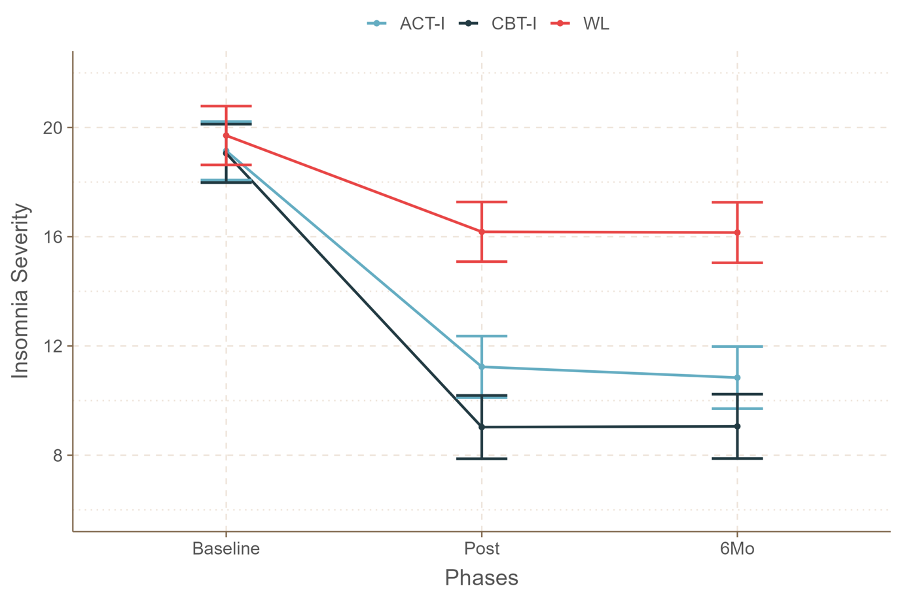
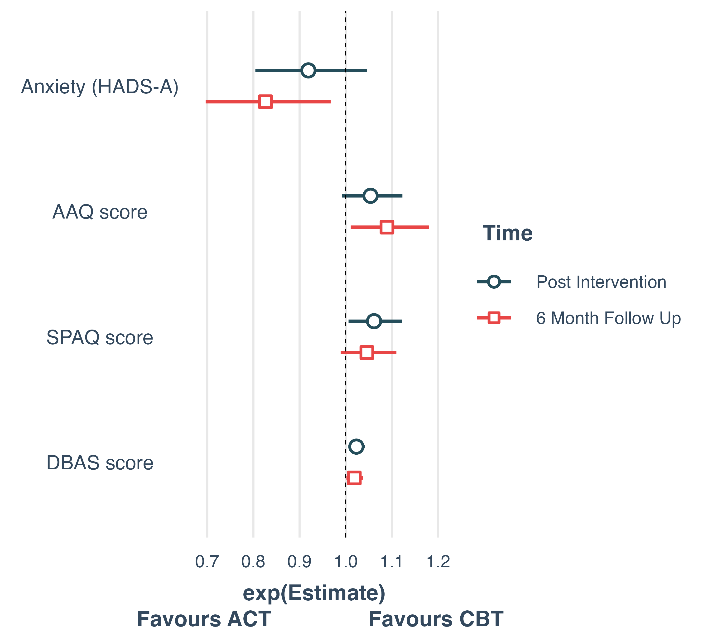

ACT Shows Superior Reduction in Anxiety at 6-Month Follow-Up
Factors associated with ACT compared to CBT for insomnia.
Renatha El Rafihi-Ferreira 1, 
rerafihi@usp.br
Ila Linares, Marwin Carmo, Altay Souza.
1 Department of Psychology, University of São Paulo, Brazil
Introduction
Studies have shown that behavioral interventions for insomnia also promote changes in other psychiatric symptoms and psychological processes. The objective is to evaluate factors associated with acceptance and commitment therapy (ACT) compared to cognitive behavioral therapy (CBT) for insomnia before and after treatment.
Methods
Participants were 152 adults meeting DSM-5 diagnostic criteria for chronic insomnia enrolled in a randomized clinical trial comparing ACT vs CBT vs WL for insomnia El Rafihi-Ferreira R (2024)
Binary logistic regression in 3 moments (pre-treatment, post-treatment and 6-month follow-up) using HADS-D, HADS-A, SPAQ, AAQ and IGI as potential predictors associated with the intervention group (ACT vs CBT).
| CBT | ACT | p-value | |
|---|---|---|---|
| Age | 40.5 (9.9) | 40.4 (10.4) | >0.9 |
| Sex | 0.6 | ||
| Masculine | 20 / 76 (26%) | 17 / 76 (22%) | |
| Feminine | 56 / 76 (74%) | 59 / 76 (78%) | |
| Education | 0.4 | ||
| Basic Education | 17 / 76 (22%) | 13 / 76 (17%) | |
| High Education | 59 / 76 (78%) | 63 / 76 (83%) | |
| Marital Status | 0.4 | ||
| Single/Divorced | 38 / 76 (50%) | 33 / 76 (43%) | |
| Married/United | 38 / 76 (50%) | 43 / 76 (57%) | |
| ISI score | 19.1 (4.0) | 19.1 (4.2) | 0.7 |
| Anxiety Score (HADS-A) | 10.2 (3.7) | 9.9 (3.9) | 0.5 |
| Depression Score (HADS-D) | 8.1 (3.9) | 8.6 (4.1) | 0.4 |
| AAQ Score | 27.5 (8.8) | 27.5 (9.4) | 0.9 |
| DBAS Score | 110.9 (23.1) | 111.8 (23.1) | 0.8 |
Results

Figure 1: ISI Scores in the Groups and Protocol Phases

Figure 2: Regression Coeficients CBT vs ACT
- At pre-treatment, the variables were not associated with the therapeutic modality;
- In post-treatment DBAS (OR=1.02[1.01-1.04]) and SPAQ (OR=1.06[1.01-1.12) were associated with ACT;
- In 6-month follow-up anxiety (OR=0.83[0.70-0.97]) and AAQ (OR=1.10[1.01-1.21) were associated with CBT.
Conclusion
CBT has a better effect on sleep beliefs and acceptance immediately after treatment ends and after 6 months in beliefs about sleep and psychological flexibility;
ACT has a better effect on anxiety after 6 months.
References
El Rafihi-Ferreira R, Toscanini AC, Hasan R. 2024. “Acceptance and Commitment Therapy Versus Cognitive Behavioral Therapy for Insomnia: A Randomized-Controlled-Trial.” Journal of Consulting and Clinical Psychology 92 (6). https://doi.org/10.1037/ccp0000881.